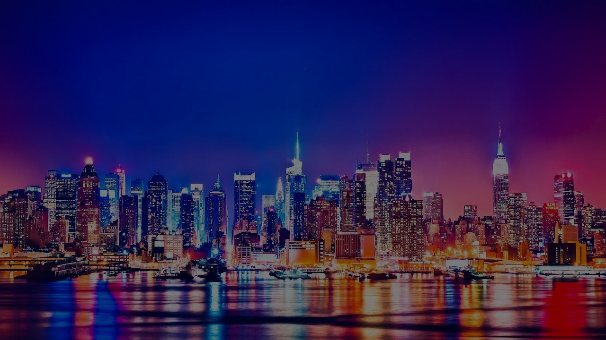

-

Atracții
-

Orașul care nu doarme niciodată.

Central Park este un parc urban în Manhattan, New York City. Central Park este cel mai vizitat parc urban din Statele Unite, cu 40 de milioane de vizitatori în 2013 și una dintre locațiile cele mai filmate din lume. Parcul, gestionat de zeci de ani de Departamentul de parcuri și recreere din New York, este în prezent gestionat de Conservarea Centrală a Parcului, în baza unui contract cu guvernul municipal Un parteneriat public-privat. Conservarea este o organizație non-profit care contribuie cu 75% din bugetul anual al Central Park de 65 milioane de dolari și este responsabilă pentru întreaga îngrijire de bază a parcului de 843 de acri.

Podul Brooklyn este un pod hibrid cu cablu de suspendare / suspendare din New York, care se întinde pe râul Est, între cartierele Manhattan și Brooklyn. Deschis la 24 mai 1883, Podul Brooklyn a fost prima trecere fixă peste râul Est. A fost, de asemenea, cel mai lung pod suspendat din lume la momentul deschiderii sale, cu o lungime principală de 486,3 m 1.595,5 metri și o punte situată la 38,7 m deasupra apei medii înalte. Intervalul a fost inițial numit New York și Brooklyn Bridge sau East River Bridge, dar a fost redenumit oficial Brooklyn Bridge în 1915.

Times Square este o intersecție comercială importantă din cartierul Manhattan al orașului New York, la intersecția Broadway și Seventh Avenue și se întinde de la vest 42nd Street la vest 47th Street. Zona Times Square extinsă, de asemenea numită Theatre District este formată din străzile dintre Sixth și Eighth Avenue de la est la vest și străzile Vest 40th și Vest 53rd de la sud la nord, alcătuind partea de vest a zonei comerciale a Midtown Manhattan.
Empire State Building este un zgârie-nori și se află la intersecția dintre Fifth Avenuee și West Street 34. Clădirea a fost cea mai înaltă clădire din lume pentru mai mult de 40 de ani, între anii 1931 și 1972. A fost terminată în 1931 și a rezistat pe primul loc în top până ce a fost construit World Trade Center. În urma atacurilor teroriste cu bombe și distrugerea World Trade Center în 2001, Empire State Building a devenit din nou cea mai înaltă clădire din New York City. Empire State Building a fost numită de către Societatea Americană a Inginerilor civili ca una dintre cele șapte minuni ale lumii moderne.

Clădirea Chrysler Building este un zgârie-nori din New York, realizat în manieră Art Deco, care se găsește în partea estică a cartierului Manhattan, la intersecția a două străzi cunoscute, 42nd Street și Lexington Avenue.
Considerată emblematică pentru mișcarea artistică Art Deco, șiîn special pentru arhitectura Art Deco, clădirea a fost proiectată și realizată de arhitectul american William Van Alen. Astăzi, după aproape opt decenii de la inaugurarea sa, Chrysler Building este considerată una dintre cele mai valoroase și deosebite clădiri foarte înalte din New York City și din întreaga lume.
Statuia Libertății este situată în portul orașului New York pe mica insulă Liberty Island, la sud-est de Manhattan, la gura de vărsare a fluviului Hudson în oceanul Atlantic. Ea are un înveliș de cupru care acoperă un schelet de fier. Monumentul are o greutate de 225 tone, culoarea statuii prin oxidarea cuprului a devenit verde. Soclul are o formă de stea fiind construit din piatră. În interiorul său se află un muzeu. Statuia reprezintă zeița libertății care stă cu un picior pe lanțul rupt al sclaviei. Zeița ține în mâna stângă o tablă cu inscripția cu cifre romane "JULY IV MDCCLXXVI", adică 4 iulie 1776, data când a fost ratificată Declarația de independență a Statelor Unite ale Americii. În mâna dreaptă zeița are o făclie cu flacăra aurită.